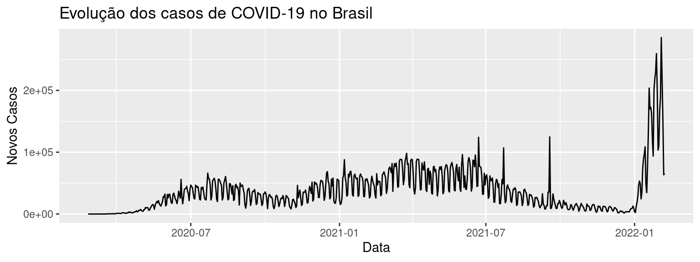
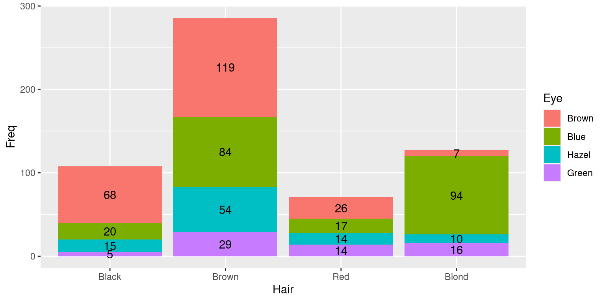
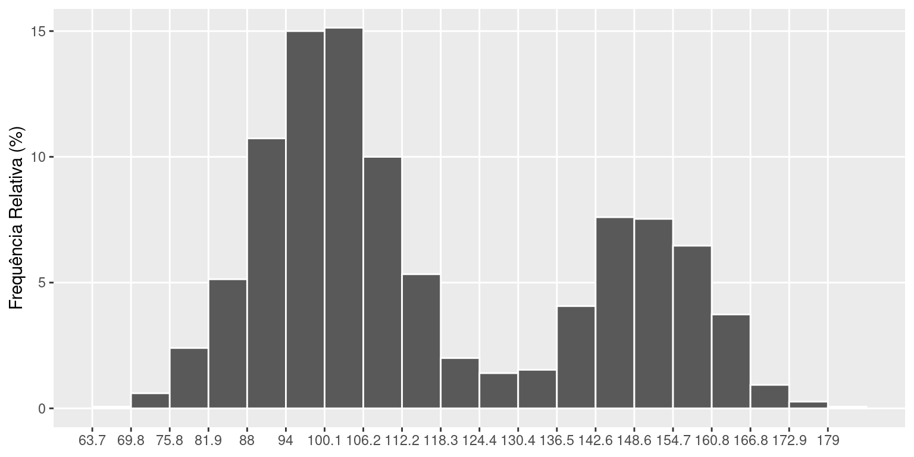
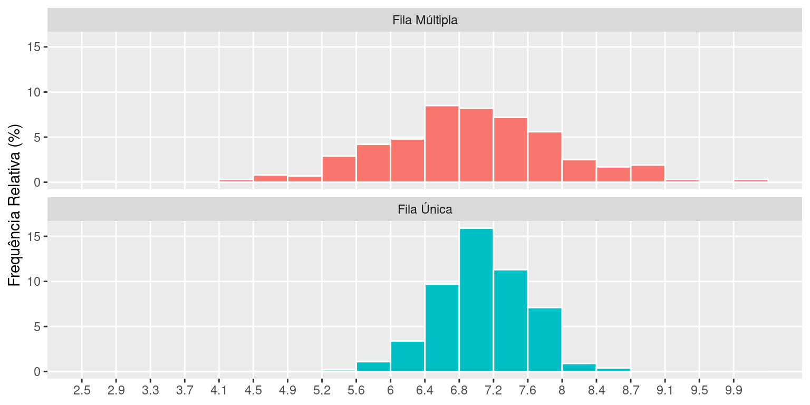
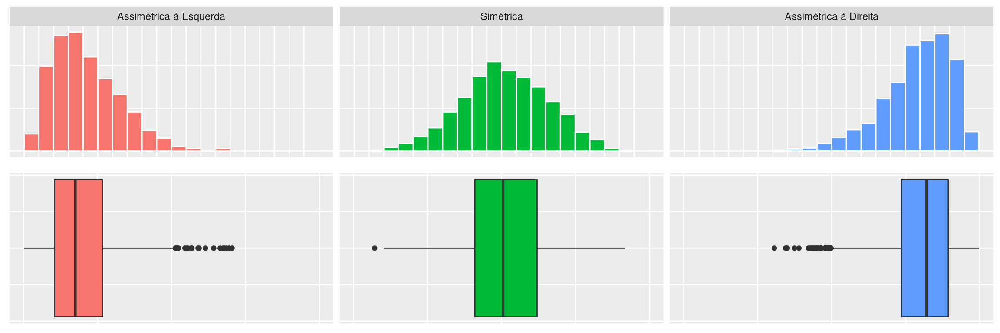
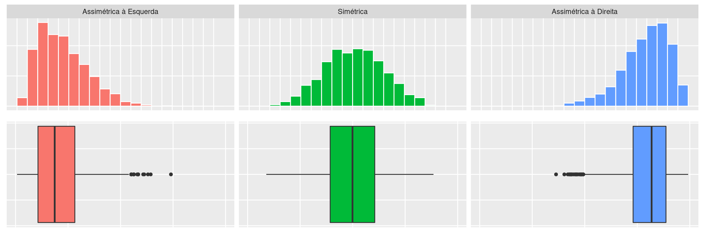
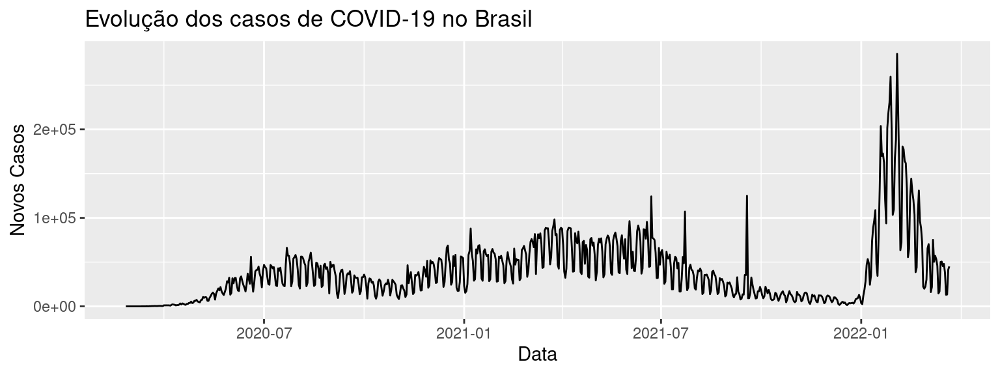

Capítulo 2 Análise Gráfica
2.1 Introdução
Já sabemos que as variáveis de um estudo dividem-se em quatro tipos:
- Qualitativas:
- nominais
- ordinais
- Quantitativas:
- discretas
- contínuas
Os dados gerados por esses tipos de variáveis são de naturezas diferentes e devem receber tratamentos diferentes. Portanto, vamos estudar as ferramentas mais adequadas para cada tipo de dados, separadamente.
2.2 Variáveis Qualitativas - Nominais e Ordinais
Na base de dados \(\texttt{mtcars}\), uma das duas variáveis qualitativas presentes é a categoria da transmissão (automática ou manual). Para organizar os dados provenientes de uma variável qualitativa, é usual fazer uma tabela de frequências, como a tabela abaixo, onde estão apresentadas as frequências com que ocorre cada um dos tipos de transmissão no total dos 32 carros observados. Cada categoria da variável transmissão (automática, manual) é representada numa linha da tabela. Há uma coluna com as contagens de carros em cada categoria (frequência absoluta) e outra com os percentuais que essas contagens representam no total de carros (frequência relativa). Esse tipo de tabela representa a distribuição de frequências dos carros segundo a variável transmissão.
Como a variável transmissão é qualitativa nominal, ou seja, não há uma ordem natural em suas categorias, a ordem das linhas da tabela pode ser qualquer uma. É comum a disposição das linhas pela ordem decrescente das frequências das classes.
Quando a variável tabelada for do tipo qualitativa ordinal, as linhas da tabela de frequências devem ser dispostas na ordem existente para as categorias. A tabela abaixo mostra a distribuição de frequências das coletas segundo o mês de observação na base de dados \(\texttt{airquality}\), que é uma variável qualitativa ordinal. Nesse caso, podemos acrescentar mais duas colunas com as frequências acumuladas (absoluta e relativa), que mostram, para cada mês, a frequência das coletas até aquele mês. Por exemplo, até o mês de julho, foram coletadas 92 amostras, o que representa 60,13% do total de amostras coletadas.
Note que as frequências acumuladas não fazem sentido em distribuição de frequências de variáveis para as quais não existe uma ordem natural nas categorias, as qualitativas nominais.
A visualização da distribuição de frequências de uma variável fica mais fácil se fizermos um gráfico a partir da tabela de frequências. Existem vários tipos de gráficos, dependendo do tipo de variável a ser representada. Para as variáveis do tipo qualitativas, abordaremos dois tipos de gráficos: os de setores e os de barras.
Os gráficos de setores, mais conhecidos como gráficos de pizza ou torta, são construídos dividindo-se um círculo (pizza) em setores (fatias), um para cada categoria, que serão proporcionais à frequência daquela categoria.
A Figura a seguir mostra um gráfico de setores para a variável transmissão, construído a partir da primeira tabela de frequências. Através desse gráfico, fica mais fácil perceber que os carros automáticos são a grande maioria dos carros. Como esse gráfico contém todas as informações da tabela, pode substituí-la com a vantagem de tornar análise dessa variável mais agradável.
library(ggplot2)
df = data.frame(table(mtcars$am))
levels(df$Var1) = c("Automático","Manual")
ggplot(df, aes(x="", y=Freq, fill=Var1)) +
geom_bar(stat="identity") +
coord_polar("y", start=0) +
theme_void() +
theme(legend.title = element_blank())
Quando houver mais de duas categorias de uma variável nominal, a disposição no gráfico de setores deve ser pela ordem decrescente das frequências, no sentido horário. A categoria “outros,” quando existir, deve ser sempre a última, mesmo não seja a de menor frequência.
As vantagens da representação gráfica das distribuições de frequências ficam ainda mais evidentes quando há a necessidade de comparar vários grupos com relação à variáveis que possuem muitas categorias, como veremos mais adiante.
Uma alternativa ao gráfico de setores é o gráfico de barras (colunas) como o da figura a seguir. Ao invés de dividirmos um círculo, dividimos uma barra. Note que, em ambos os gráficos, as frequências relativas das categorias devem somar 100%. Aliás, esse é a idéia dos gráficos: mostrar como se dá a divisão (distribuição) do total de elementos (100%) em partes (fatias).
df = data.frame(table(mtcars$am))
levels(df$Var1) = c("Automático","Manual")
ggplot(df, aes(x=Var1, y=Freq, fill=Var1)) +
geom_bar(stat="identity") +
geom_text(aes(label = Freq),position=position_stack(vjust = 0.5)) +
theme(legend.title = element_blank(),
axis.title.x = element_blank(),
axis.ticks.x = element_blank(),
axis.title.y = element_blank())Uma situação diferente ocorre quando desejamos comparar a distribuição de frequências de uma mesma variável em vários grupos, como por exemplo, a frequência de estudantes com olhos azuis entre todas as cores de cabelo na base de dados \(\texttt{HairEyeColor}\). Se quisermos usar o gráfico de setores para fazer essa comparação, devemos fazer quatro gráficos, um para cada cor de cabelo, com duas fatias cada um (olhos azuis e olhos não azuis). Uma alternativa é a construção de um gráfico de colunas (barras) como os gráficos das figuras a seguir, onde há uma barra para cada cor de cabelo representando a frequência de estudantes com olhos azuis e aquela cor de cabelo. Além de economizar espaço na apresentação, permite que as comparações sejam feitas de maneira mais rápida.
df = data.frame(HairEyeColor[,,1] + HairEyeColor[,,2])
df = df %>% filter(Eye == "Blue")
p1 = df %>% mutate(name = fct_reorder(Hair, desc(Freq))) %>%
ggplot(aes(x=name, y=Freq, fill=name)) +
geom_bar(position="dodge", stat="identity") +
geom_text(aes(label = Freq),position=position_stack(vjust = 0.5)) +
theme(legend.position = "none",
axis.title.x = element_blank(),
axis.ticks.x = element_blank(),
axis.title.y = element_blank())
p2 = df %>% mutate(name = fct_reorder(Hair, Freq)) %>%
ggplot(aes(x=name, y=Freq, fill=name)) +
geom_bar(position="dodge", stat="identity") +
geom_text(aes(label = Freq),position=position_stack(vjust = 0.5)) +
coord_flip() +
theme(legend.position = "none",
axis.title.x = element_blank(),
axis.ticks.x = element_blank(),
axis.title.y = element_blank())
gridExtra::grid.arrange(p1,p2,ncol=2)A ordem dos grupos pode ser qualquer, ou aquela mais adequada para a presente análise. Frequentemente, encontramos as barras em ordem decrescente, já antecipando nossa intuição de ordenar os grupos de acordo com sua frequência para facilitar as comparações. Caso a variável fosse do tipo ordinal, a ordem das barras seria a ordem natural das categorias, como na tabela de frequências.
A figura abaixo mostra um gráfico de barras que pode ser usado da comparação da distribuição de frequências de uma mesma variável em vários grupos. É também uma alternativa ao uso de vários gráficos de setores, sendo, na verdade, a junção de dois gráficos com os das figuras acima num só gráfico. Porém, esse tipo de gráfico só deve ser usado quando não houver muitos grupos a serem comparados e a variável em estudo não tiver muitas categorias.
df = data.frame(HairEyeColor[,,1] + HairEyeColor[,,2])
ggplot(df,aes(x=Hair, y=Freq, fill=Eye)) +
geom_bar(stat="identity") +
geom_text(aes(label = Freq),position=position_stack(vjust = 0.5))Frequentemente, é necessário fazer comparações da distribuição de frequências de uma variável em vários grupos simultaneamente. Nesse caso, o uso de gráficos bem escolhidos e construídos torna a tarefa muito mais fácil. Na figura abaixo, está representada a distribuição de frequências da cor dos olhos segundo a variável cor do cabelo.
df = data.frame(HairEyeColor[,,1] + HairEyeColor[,,2])
ggplot(df,aes(x=Hair, y=Freq, fill=Eye)) +
geom_bar(position="dodge",stat="identity") +
geom_text(aes(label = Freq),position=position_dodge(width = 1))
2.3 Variáveis Quantitativas Discretas
Quando estamos trabalhando com uma variável discreta que assume poucos valores, podemos dar a ela o mesmo tratamento dado às variáveis qualitativas ordinais, assumindo que cada valor é uma classe e que existe uma ordem natural nessas classes.
Quando trabalhamos com uma variável discreta que pode assumir um grande número de valores distintos como, por exemplo, parte inteira da temperatura máxima, a construção da tabela de frequências e de gráficos considerando cada valor como uma categoria fica inviável. A solução é agrupar os valores em classes ao montar a tabela, como mostra a tabela abaixo.
A Figura abaixo mostra o gráfico da distribuição de frequências da temperatura medida por 236 dias consecutivos.
dt %>% filter(dt$Variavel != "Total") %>%
ggplot(aes(x=Variavel, y=Freq_rel)) +
geom_bar(position="dodge",stat="identity") +
labs(x="Temperatura",y="Frequência Relativa (%)") +
theme(legend.position = "none")2.4 Variáveis Quantitativas Contínuas
Quando a variável em estudo é do tipo contínua, que assume muitos valores distintos, o agrupamento dos dados em classes será sempre necessário na construção das tabelas de frequências. A tabela abaixo apresenta a distribuição de frequências para o peso dos carros.
2.5 Histograma
A representação gráfica da distribuição de frequências de uma variável contínua é feita através de um gráfico chamado histograma, mostrado nas figuras abaixo com o peso de diamantes (\(\texttt{diamonds}\)). O histograma nada mais é do que o gráfico de barras verticais, porém construído com as barras unidas, devido ao caráter contínuo dos valores da variável.
library(ggplot2)
p1=ggplot(diamonds,aes(carat)) +
geom_histogram(color = "white") +
labs(y = "Frequência Absoluta")
p2=ggplot(diamonds,aes(carat)) +
geom_histogram(aes(y = (..count..)/sum(..count..)*100),color = "white") +
labs(y = "Frequência Relativa (%)")
gridExtra::grid.arrange(p1,p2,ncol=2)
Os histogramas das figuras acima têm exatamente a mesma forma, apesar de serem construídos usando as frequências absolutas e relativas, respectivamente. O objetivo dessas figuras é mostrar que a escolha do tipo de frequência a ser usada não muda a forma da distribuição. Entretanto, o uso da frequência relativa torna o histograma comparável a outros histogramas, mesmo que os conjuntos de dados tenham tamanhos diferentes (desde a mesma escala seja usada!)
Para o desenvolvimento do histograma:
- Calcule a amplitude dos dados
- Defina a quantidade de classes (as barras verticais). Não existe uma regra, porém uma boa aproximação seria calcular a raiz quadrada da quantidade de dados (\(\sqrt n\))
- Calcule o intervalo das classes dividindo a amplitude pela quantidade de classes
- Determine os limites das classes. Selecione o valor mínimo dos dados (se for mais viável, ele pode ser arredondado para baixo) e soma o valor do intervalo de classe para obter o limite superior
- Faça o passo anterior para todas as classes
- Calcule a frequência dos dados que pertence a cada intervalo
Este é o passo a passo básico para a elaboração de um Histograma, que seja capaz de lhe trazer informações precisas sobre a frequência com que algo acontece em um determinado contexto.
Ao estudarmos a distribuição de frequências de uma variável quantitativa, seja em um grupo apenas ou comparando vários grupos, devemos verificar basicamente três características:
- Tendência Central;
- Variabilidade;
- Forma.
Tais características podem ser quantificadas através das medidas de síntese numérica ou visualizadas a partir do histograma.
2.5.1 Tendência Central
A tendência central da distribuição de frequências de uma variável é caracterizada pelo valor (ou faixa de valores) “típico” da variável.
Uma das maneiras de representar o que é “típico” é através do valor mais frequente da variável, chamado de moda. Ou, no caso da tabela de frequências, a classe de maior frequência, chamada de classe modal. No histograma, esta classe corresponde àquela com barra mais alta (“pico”).
No exemplo acima, a classe modal é a que vai de 98 até 103.6. Assim, os dados repousam, tipicamente entre esses valores. Entretanto, temos dois picos.
Geralmente, um histograma bimodal indica a existência de dois grupos, com valores centrados em dois pontos diferentes do eixo de valores. Uma distribuição de frequências pode também ser amodal, ou seja, todos os valores são igualmente frequentes. Ou também unimodal, quando os valores estão concentrados somente em um ponto/classe.
2.5.2 Variabilidade
Para descrever adequadamente a distribuição de frequências de uma variável quantitativa, além da informação do valor representativo da variável (tendência central), é necessário dizer também o quanto estes valores variam, ou seja, o quão dispersos eles são.
De fato, somente a informação sobre a tendência central de um conjunto de dados não consegue representá-lo adequadamente. A Figura abaixo mostra um histograma para os tempos de espera de 1000 clientes de dois bancos, um com fila única e outro com fila múltipla, com o mesmo número de atendentes. Os tempos de espera nos dois bancos têm a mesma tendência central de 7 minutos. Entretanto, os dois conjuntos de dados são claramente diferentes, pois os valores são muito mais dispersos no banco com fila múltipla. Assim, quando entramos num fila única, esperamos ser atendidos em cerca de 7 minutos, com uma variação de, no máximo, meio minuto a mais ou a menos. Na fila múltipla, a variação é maior, indicando-se que tanto pode-se esperar muito mais ou muito menos que o valor típico de 7 minutos.

2.5.3 Forma
A distribuição de frequências de uma variável pode ter várias formas, mas existem três formas básicas, apresentadas na figura abaixo através de histogramas.

Quando uma distribuição é simétrica em torno de um valor (o mais frequente), significa que as observações estão igualmente distribuídas em torno desse valor (metade acima e metade abaixo).
A assimetria de uma distribuição pode ocorrer de duas formas:
- quando os valores concentram-se à esquerda (assimetria com concentração à esquerda ou assimetria com cauda à direita);
- quando os valores concentram-se à direita (assimetria com concentração à direita ou com assimetria cauda à esquerda);
Ao definir a assimetria de uma distribuição, algumas pessoas preferem se referir ao lado onde está a concentração dos dados. Porém, outras pessoas preferem se referir ao lado onde está “faltando” dados (cauda). As duas denominações são alternativas.
Em alguns casos, apenas o conhecimento da forma da distribuição de frequências de uma variável já nos fornece uma boa informação sobre o comportamento dessa variável. Por exemplo, o que você acharia se soubesse que a distribuição de frequências das notas da primeira prova da disciplina de Estatística que você está cursando é, geralmente, assimétrica com concentração à direita? Como você acha que é a forma da distribuição de frequências da renda no Brasil?
2.6 Boxplot
O Boxplot é um gráfico proposto para a detecção de valores discrepantes (outliers), que são aqueles valores muito diferentes do restante do conjunto de dados.
Esses valores discrepantes podem representar erros no processo de coleta ou de processamento dos dados, e, nesse caso, devem ser corrigidos ou excluídos do banco de dados. No entanto, os outliers podem ser valores corretos, que, por alguma razão, são muito diferentes dos demais valores. Nesse caso, a análise desses dados deve ser cuidadosa, pois, como sabemos, algumas estatísticas descritivas, como a média e o desvio-padrão, são influenciadas por valores extremos.
Na construção do Boxplot, utilizamos alguns percentis (mediana, primeiro e terceiro quartis), que são pouco influenciados por valores extremos. Além disso, precisamos saber quais são os valores mínimo e máximo do conjunto de dados.
O Boxplot é constituído por uma caixa atravessada por uma linha, construído usando um eixo com uma escala de valores, como mostra a figura abaixo. Como sabemos, entre o primeiro e o terceiro quartis, temos 50% dos dados. Podemos pensar, então, que essa caixa contém metade dos dados do conjunto.

Como um gráfico tem que representar todos os valores do conjunto de dados, precisamos representar os outros 50%, sendo 25% abaixo do Q1 e 25% acima do Q3. Esses valores serão representados pelas duas linhas que saem das extremidades da caixa. Cada uma das linhas é traçada, a partir das extremidades da caixa, até que encontre o valor máximo ou mínimo; ou atinja o comprimento máximo de 1,5 vezes a altura da caixa (IQR). O que acontecer primeiro.
No exemplo da imagem acima o segundo caso aconteceu, assim os valores que ainda não foram representados devem ser devidamente marcados em suas respectivas posições na escala de valores. Esses valores são considerados outliers pelo critério do boxplot. Obviamente, o limite superior do boxplot não coincidiu com o valor máximo do conjunto de dados, que foi considerado um valor discrepante (outlier).
Além da detecção de valores discrepantes, o boxplot pode ser muito útil na análise da distribuição dos valores de um conjunto de dados. Através do boxplot, podemos:
- identificar a forma da distribuição (simétrica ou assimétrica);
- avaliar e comparar a tendência central (mediana) de dois ou mais conjuntos de dados;
- comparar a variabilidade de dois ou mais conjuntos de dados
Para avaliar a forma da distribuição, devemos observar o deslocamento da caixa em relação a linha do boxplot. Lembrando que a caixa do boxplot contém 50% dos dados, o seu deslocamento na linha nos informa onde estão concentrados os dados.
Se a caixa está mais deslocada para um dos lados da linha, significa que metade dos dados estão concentrados naquele lado da escala de valores e, assim, a distribuição é assimétrica. Se a caixa está praticamente no meio da linha, dividindo-a em duas partes iguais, é distribuição será considerada simétrica.

2.7 Diagrama de Dispersão
O diagrama de dispersão é um gráfico onde pontos no espaço cartesiano XY são usados para representar simultaneamente os valores de duas variáveis quantitativas medidas em cada indivíduo do conjunto de dados.
O Quadro e a Figura abaixo mostram um esquema do desenho do diagrama de dispersão. Neste exemplo, foram medidos os valores de duas variáveis quantitativas, X e Y, em quatro indivíduos. O eixo horizontal do gráfico representa a variável X e o eixo vertical representa a variável Y.

O diagrama de dispersão é usado principalmente para visualizar a relação/associação entre duas variáveis, mas também para é muito útil para:
- Comparar o efeito de dois tratamentos no mesmo indivíduo
- Verificar o efeito tipo antes/depois de um tratamento
A seguir, veremos dois exemplos da utilização do diagrama de dispersão. O primeiro refere-se ao estudo da associação entre duas variáveis. O segundo utiliza o diagrama de dispersão para comparar o efeito da aplicação de um tratamento, comparando as medidas antes e depois da medicação.
2.7.1 Exemplo 1
Um produtor de morangos para exportação deseja produzir frutos grandes, pois frutos pequenos têm pouco valor mesmo no mercado interno. Além disso, os frutos, mesmo grandes, não devem ter tamanhos muito diferentes entre si. O produtor suspeita que uma dos fatores que altera o tamanho dos frutos é o número de frutos por árvore.
Para investigar a relação entre o número de frutos que uma planta produz e o peso destes frutos, ele observou dados de 10 morangueiros na primeira safra (Quadro abaixo) e gerou o Diagrama de Dispersão apresentado abaixo.
library(ggplot2)
library(tidyr)
aux = matrix(c(15.15,15.45,15.63,15.65,16.38,NA,NA,NA,NA,NA,NA,NA,NA,NA,
14,14.5,15.35,15.86,15.94,16.13,NA,NA,NA,NA,NA,NA,NA,NA,
13.67,13.76,14.06,14.11,14.54,14.89,15.5,NA,NA,NA,NA,NA,NA,NA,
11,11.5,12.39,12.39,12.9,14.5,15.5,16.56,NA,NA,NA,NA,NA,NA,
10.24,11.12,12.05,12.37,13.48,13.8,14.04,15.39,16,NA,NA,NA,NA,NA,
9,9.32,10.67,11.56,11.67,12.56,12.83,12.84,13.43,15.09,NA,NA,NA,NA,
7.82,8.56,8.74,9.57,11.08,11.92,12.13,12.5,14.14,14.2,14,NA,NA,NA,
7.25,9.41,10.15,10.33,10.8,10.95,11.13,11.48,11.49,12.86,13.37,15.04,NA,NA,
6.95,7.61,8.53,10,10.94,11.04,11.43,11.63,11.97,12.02,12.74,13.53,14,NA,
7,8,9,10,10,10.5,11,11.16,11.17,11.7,12.45,12.89,13.47,13.54),
nrow=10,ncol = 14,byrow = T)
dados = data.frame(ID_Morangueiro = 1001:1010,
Qtd_Frutos = 5:14,aux)
dados %>%
pivot_longer(starts_with("X")) %>%
ggplot(aes(x = Qtd_Frutos, y = value)) +
geom_point(size = 1) +
scale_x_discrete(limits=5:14) +
labs(x = "Quantidade de Frutos",y = "Peso do Fruto (g)")O diagrama de dispersão mostra-nos dois fatos. O primeiro, que há um decréscimo no valor médio do peso do fruto por árvore à medida que cresce o número de frutos na árvore. Ou seja, não é vantagem uma árvore produzir muitos frutos, pois eles tenderão a ser muito pequenos.
O segundo fato que percebemos é que, com o aumento no número de frutos na árvore, cresce também a variabilidade no peso, gerando tanto frutos muito grandes, como muito pequenos.
Assim, conclui-se que não é vantagem ter poucas plantas produzindo muito frutos, mas sim muitas plantas produzindo poucos frutos, mas grandes e uniformes. Uma análise mais detalhada poderá determinar o número ideal de frutos por árvore, aquele que maximiza o peso médio e, ao mesmo tempo, minimiza a variabilidade do peso.
2.7.2 Exemplo 2
Captopril é um remédio destinado a baixar a pressão sistólica. Para testar seu efeito, ele foi ministrado a 12 pacientes, tendo sido medida a pressão sistólica antes e depois da medicação.
Os mesmos indivíduos foram utilizados nas duas amostras (Antes/depois). Assim, é natural compararmos a pressão sistólica para cada indivíduo, comparando a pressão sistólica depois e antes. Para todos os pacientes, a pressão sistólica depois do Captopril é menor do que antes da medicação. Mas como podemos “ver” se estas diferenças são grandes? Com a ajuda do diagrama de dispersão mostrado na figura abaixo.
dados = data.frame(Paciente = LETTERS[1:12],
Antes = c(200, 174, 198, 170, 179, 182, 193, 209, 185, 155, 169, 210),
Depois = c(191, 170, 177, 167, 159, 151, 176, 183, 159, 145, 146, 177))
dados %>%
ggplot(aes(x = Antes, y = Depois)) +
geom_point(size = 1) +
ylim(140,220) + xlim(140,220) +
geom_abline(slope = 1, intercept = 0) +
geom_text(aes(x = 200, y = 160), label = "Depois < Antes") +
geom_text(aes(x = 160, y = 200), label = "Depois > Antes") +
geom_text(aes(x = 210, y = 210), label = "Depois = Antes")
Cada ponto no diagrama de dispersão corresponde às medidas de pressão sistólica de um paciente, medida antes e depois da medicação. A linha marcada no diagrama corresponde à situação onde a pressão sistólica não se alterou depois do paciente tomar o Captopril. Veja que todos os pontos estão abaixo desta linha, ou seja para todos os pacientes o Captopril fez efeito. Grande parte destes pontos está bem distante da linha, mostrando que a redução na pressão sistólica depois do uso do medicamento não foi pequena.
2.8 Séries Temporais
Séries temporais (ou séries históricas) são um conjunto de observações de uma mesma variável quantitativa (discreta ou contínua) feitas ao longo do tempo. O conjunto de novos casos da COVID-19 é um exemplo de série temporal.
Um dos objetivos do estudo de séries temporais é conhecer o comportamento da série ao longo do tempo (aumento, estabilidade ou declínio dos valores). Em alguns estudos, esse conhecimento pode ser usado para se fazer previsões de valores futuros com base no comportamento dos valores passados.
A representação gráfica de uma série temporal é feita através do gráfico de linha, como exemplificado nas figuras abaixo. No eixo horizontal do gráfico de linha, está o indicador de tempo e, no eixo vertical, a variável a ser representada.
library(tsibble)
library(lubridate)
library(dplyr)
dados = read.csv("https://raw.githubusercontent.com/wcota/covid19br/master/cases-brazil-states.csv")
dados %>%
mutate(date = as_date(date)) %>%
as_tsibble(key = state, index = date) %>%
filter(state == "TOTAL") %>%
select(date, newCases) %>%
ggplot(aes(x = date, y = newCases)) +
geom_line() +
labs(title = "Evolução dos casos de COVID-19 no Brasil",
y = "Novos Casos", x = "Data")De maneira geral, um gráfico de linhas deve ser construído de modo que:
- O início do eixo vertical seja o valor mínimo possível para a variável que está sendo representada, para evitar as distorções
- O final do eixo vertical seja tal que a série fica centrada em relação ao eixo vertical
- Os tamanhos dos eixos sejam o mais parecidos possível
2.9 Gráfico de Radar
O gráfico de radar é um diagrama e/ou gráfico que consiste de uma sequência de raios equi-angulares, com cada raio representando uma das variáveis. O comprimento de cada raio é proporcional à magnitude da variável para o ponto de dados em relação à máxima magnitude da variável em todos os pontos. Uma linha é desenhada ligando os valores de cada raio. Isso dá ao diagrama uma aparência de estrela, o que deu origem a um dos nomes mais populares para este gráfico. O gráfico de estrela pode ser usado para responder as seguintes questões:
- Que observações são mais semelhantes, por exemplo, existem clusters de observações?
- Existem exceções?
Gráficos de radar oferecem uma maneira útil de exibir observações multivariáveis com um número arbitrário de variáveis. Cada estrela representa uma única observação. Normalmente, os gráficos de radar são gerados em um formato multi-diagrama com muitas estrelas em cada página, cada estrela representando uma observação. É um pouco mais fácil de ver padrões em dados se as observações forem organizadas em alguma ordem não-arbitrária (se as variáveis forem atribuídas aos raios da estrela em uma ordem significativa).
Uma aplicação de gráficos de radar é o controle de melhoria de qualidade para apresentar as métricas de desempenho de qualquer programa em curso. Eles também são usados em esportes para representar os pontos fortes e fracos de jogadores, onde eles são geralmente chamados de gráficos de aranha. No exemplo abaixo vemos a performance de três alunos (a,b,c) em relação as dimensões matemática, inglês, biologia, música e R.
library(fmsb)
dados = as.data.frame(matrix(sample(0:20, 15, replace=F), ncol=5))
colnames(dados) = c("matemática", "inglês", "biologia", "música" ,"R")
rownames(dados) = paste("aluno", letters[1:3])
dados = rbind(rep(20,5), rep(0,5), dados)
radarchart(dados)